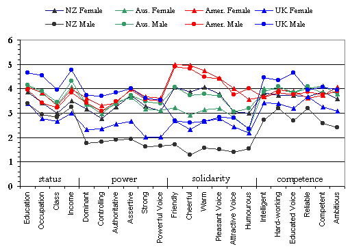
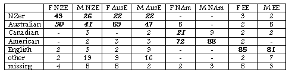

Evaluating English Accents WorldWide Results: IRELAND
Irish Personality Trait Means
58 university students from Trinity College Dublin
47 female, 10 male, 1 missing; mean age 18.9
(collected by Rachel Hoare)

Irish Students' Accent Guesses Majority/plurality percentage
for each speaker in boldface; Major erroneous guesses
italicised

Points to Note:
Like other english-speaking countries, their identification of NAm and EE accents was close to perfect.
Similar to their British counterparts, their accuracy in identifying an accent as Antipodean was also very high. However, their ability to differentiate between AusE and NZE was low (except for the AusE female).
The NAm voices, along with the NZ female are rated highly for solidarity.
The English male, leader in status, power and competence, does not fair so well in solidarity traits.
The English female does relatively poorly on most traits.
Created by: Owen Baxter,
Content: James Green, Modified: 10 October 2002